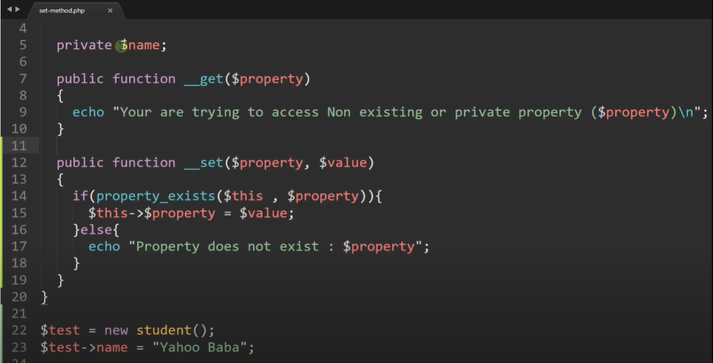

test
- Test method in the class should start with (test).
- A test is consist of 3 parts.
- When create a test file by default it is created inside feature folder.
db indexing
- Index makes search faster.
- when create index it allocate separate memory for that column.
- indexing uses b-tree data structure.
- for read intensive situation we use db indexing.
- CREATE INDEX index_name ON table_name (column_name).
- primary key and unique work as auto index.
- after joining multiple table and search fast we use indexing.
- avoid null value column.
- avoid small table for indexing.
http method
- it is used to update or create data
- we send full request body in put method.
- if data is not present it create otherwise it update the data.
- it works based on id.
- without id it returns 404 error.
- we only send required data as request in patch method.
put (upsert)
patch
unsigned
- The unsigned in MySQL is a data type.
- Whenever we write an unsigned to any column that means you cannot insert negative numbers.
php error type
- If there is a function that was passed the wrong parameters.
- If there is a call to another file that could not be found.
- These errors won't stop the parser from executing other correct code lines in the program.
- Using variables you didn't define.
- These are very similar to warning errors as they only wish to notify you about something they are not sure why you did, although it doesn't halt the code's execution.
- this error causes the PHP parser to terminate the script execution when encountered.
- Missing out delimiters like the semicolon ; or using such characters incorrectly.
- Improperly used or missing quotes, brackets, parentheses, and braces.
- When functions, variables, or any other name is misspelled.
- A call to an undefined function in your program code.
- A call to an undefined class.
Warning
Notice
Parse (syntax)
Fatal
Abstract Class
- in abstract class we need atleast one abstract method.
- we only declare function, not implement.
- we implement function in extended class.
- in extended class we must use abstract function.
- we can have both abstract and non abstract property and function.
- in extended class we must set visibility lower like ( protected => pulic, public !=> protected ).
Interfaces Class
- we can inherit from multiple interfaces.
- in interfaces we can have only methods.
- all methods by default abstruct and public.
Static
- if all property and method of a class is static then class will be static.
- in interfaces we can have only methods.
- all methods by default abstruct and public.
Traits
- Traits supports multiple inheritance.
- if we have a same method in parent, child and trait ( priority will be 1 => child 2 => trait 3 => parent )
Autoload

- autoload magic function automatically load classes.
__set & __get

- __set and __get work for property.
- we use __set and __get to access or set non existing or private property.
__call
- __call work for method.
- we use __call to access or set non existing or private method.
__callStatic
- __callStatic work for Static method.
- we use __callStatic to access or set non existing or Static method.
__sleep

- if we use serialize() in obj, full obj convert into an array.
- we use __sleep method to convert only required property or method into array.
- when we use serialize() function __sleep will call automatically.
__wakeup

- if we use unserialize() in array, full array convert into an obj.
- when we use unserialize() function __wakeup will call automatically.
__invoke
- when we try to call a object as function __invoke will call automatically.
Magic Constants

- some Magic Constants.